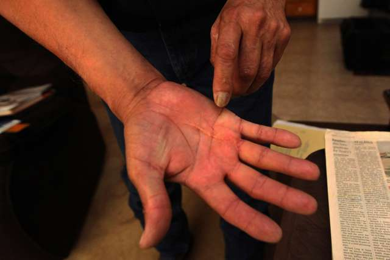

Goodbye
It was time.
More than 30 years of assembly-line drudgery had taken its toll. Sensing that its "boys" were slowing down, Henry's Turkey Service worked out a staggered separation with the processing plant. Several of the 32 men would be retired, without their input, by the end of 2008, with the rest leaving by the next spring.
"The birds were too heavy," says one of the men, Tommy House. "That's why we got retired."
Those with no family in their lives had long been promised a happy retirement back in Texas, to a building on the Goldthwaite ranch that was being renovated with money deducted from their pay. The men sometimes talked of nothing else.
But the renovation was never completed. Mr. Henry cites Mr. Johnson's death and his own health problems, and adds: "We didn't get there."
The first round of men with nowhere else to go were taken to a nursing home in Midland, 250 miles west of Goldthwaite. Those still in Atalissa, meanwhile, were asked by the turkey plant to train their nondisabled replacements in the skills they had mastered.
The evisceration supervisor, Dave Meincke, says his friends approached this final task the way they approached every workday for decades: "With pride."
Henry's Turkey Service nearly left Iowa with this as its parting impression: proud men with disability, training their nondisabled colleagues before leaving for a well-deserved Texas retirement. The fuller, more disturbing story might never have been told, had one of the men's relatives not inquired.
Sherri Brown had learned that after decades of turkey-plant toil, her older brother Keith had about $80 in savings. Failing to get satisfactory explanations from several state agencies, the furious sister contacted Clark Kauffman, a reporter at The Des Moines Register, who started making calls of his own.
These inquiries led to the chaotic scene that the Department of Human Services supervisor, Denise Gonzales, encountered that February afternoon in 2009: an eerie schoolhouse crowded with investigators, social workers, company representatives and 21 disheveled, frightened, vulnerable men.

A SWAT team of government officials assembled in the cockroach-rich kitchen. When the state fire marshal announced that he was declaring the building uninhabitable, all eyes turned to Ms. Gonzales.
"It was like I just gave birth to 21 men," Ms. Gonzales says
She gently instructed the schoolhouse residents to pack for an overnight adventure at the Super 8 Motel in Muscatine, 15 miles away. Her happy message: "We're going on vacation."
The men, some excited, some anxious, filed into vans that soon slipped through a town in late-night repose. The lights of Atalissa vanished in their wake.
After sleeping on clean sheets and eating waffles for breakfast, each evacuee was assigned a social worker. Soon these caseworkers were filing into the motel's kitchenette, where Ms. Gonzales had set up her makeshift office, to provide harrowing updates.
Here was a man who had suffered from hearing loss for years, because his ears had never been cleaned. Here was a man with dental wires jutting from his bleeding gums. Here were men with missing fingernails, forked hands, curving toenails cutting into the pads of feet.
The social workers cut toenails, bought Orajel for mouth pains and listened to the men speak of being alone in the world. ("Just me and my brother," said Robert Penner.) Afterward, some of the workers found someplace private, and cried.
On the fourth day, two yellow school buses pulled up to the Super 8, "Exceptional Persons Inc." written on their sides. This was the name of the nonprofit organization in Waterloo that Ms. Gonzales, who is now with the Illinois Department of Children and Family Services, had chosen to help the men find a new life.
Carrying spare belongings in boxes and bags, the men climbed aboard. As the school buses lumbered north to Waterloo, many of them clapped and sang.